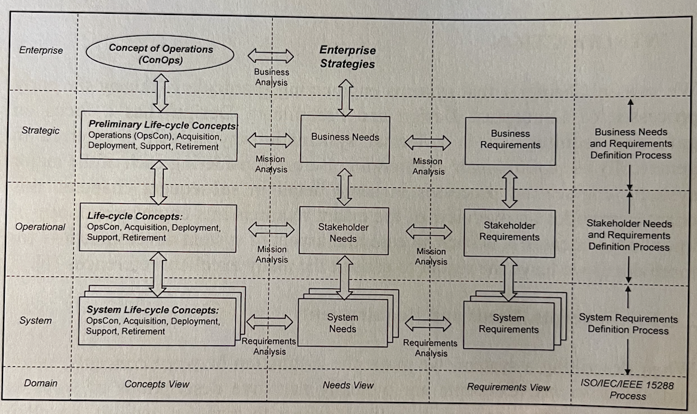
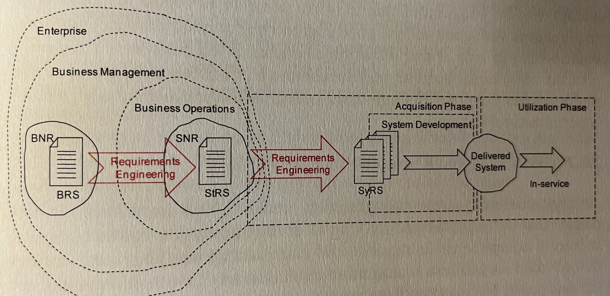
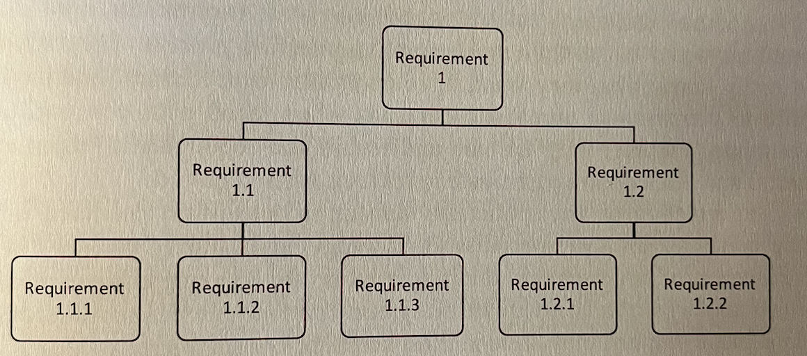
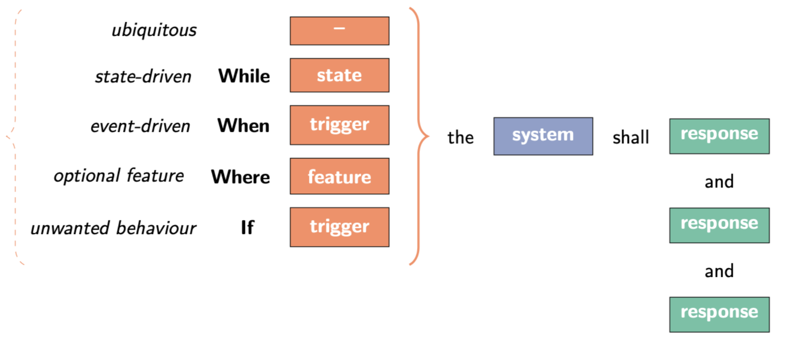
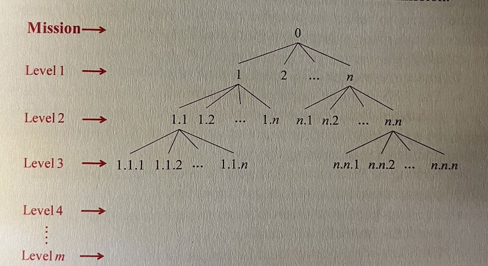
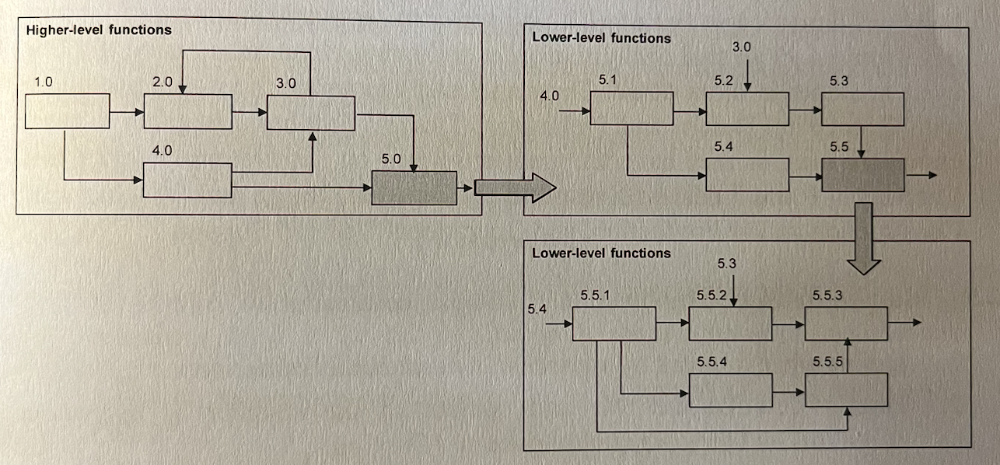

This is from Chapter 2 of the ASE book mentioned in Systems Engineering.
Concepts, Needs and Requirements
When describing a system, we make the distinction between concepts, needs and requirements.
Concepts
are typically narrative descriptions of ways in which the organization and its entities expect to manage, acquire, develop, deploy, operate, support, and retire the capability offered by the system. They are written or graphic representations that concisely express how an entity will satisfy the problem it was defined to address. Life-cycle concepts include operations concepts, acquisition concepts, deployment concepts, support and retirement concepts.
- The Acquisition Concept describes the way the system will be acquired including aspects such as stakeholder engagement, requirements definition, solicitation and contracting issues, design, production, and verification
- The Deployment Concept describes the way the system will be validated, delivered, and introduced into operations
- The Support Concept describes the desired support infrastructure and manpower considerations for supporting the system after it is deployed.
- The Retirement Concept describes the way the system will be removed from operation and retired.
Needs
are formal representations of expectations for an entity stated in the language and perspective of stakeholders. They are a formal transformation of one or more concepts into an agreed-to expectation for an entity to perform some function or posses some quality. Generally stated as business needs in the language of business management.
Requirements
Needs are transformed into requirements, which are formal representations that communicate what an entity must do to realize the intent of the needs. They are formal statements that are structured and can be validated.
Needs and requirements exist at a number of levels corresponding to four major views:
- Enterprise view: the enterprise leadership set the strategies and concepts of operations
- Strategic view: business management derive business concepts and needs as well as formalize their requirements
- Operational view: stakeholders define their concepts, needs and requirements
- Systems view: system designers define the system in logical and physical terms
The majority of these views are in the problem domain while only the systems view lies in the solution domain.
Problem Domain VS Solution Domain
- The problem domain is the responsibility of those who have ownership of the problem to be solved. The descriptions are called logical (or often functional).
- The solution domain is the responsibility of the developer implementing the solution, most commonly a contractor so the descriptions are mostly in engineering and physical terms, focusing on how the problem is to be solved.

At the highest level, there is an enterprise view in which leadership sets business vision, strategic goals and objectives in the form of a Concept of Operations (ConOps), which is also called a Strategic Business Plan (SBP).
The transformation of needs into requirements occurs at each level.
- Business Needs and Requirements (BNR) - business management, based on ConOps, define Business Needs, largely in the form of Preliminary Life-cycle Concept Documents (PLCD) which capture the Preliminary Acquisition, Preliminary Operational Concept (OpsCon), …
- Stakeholder Needs and Requirements (SNR) - using the ConOps, Preliminary OpsCon and the other PLCD as guidance, stakeholders develop Stakeholder Needs in the form of a refined OpsCon document and other Life-cycle Concept Documents (LCD) and transform them into a formal set of Stakeholder Requirements, which are documented in the StRS.
- System Requirements Definition Process - the requirements in the StRS are then transformed by requirements engineers into System Requirements, which are contained in the SyRS.
The ConOps, at the organization level, addresses the leadership's intended way of operating the organization. It may refer to the use of one or more systems, as black boxes, to forward organization's goals and objectives.
A system OpsCon document describes what the system will do (not how it will do it) and why (rationale). It is used to communicate overall quantitative and qualitative system characteristics to the acquirer, user, supplier and other organizational elements. Therefore it contains the Stakeholder Needs.
What is a Requirement?
- something that the system must do,
- a quality or attribute that it must posses, or
- a constraint under which it must operate or be developed.
Functional Requirements
the services and functions that the system should provide, the things it should do, or some action it should take.
Non-Functional Requirements
the qualities, interfaces, constraints, properties, or attributes(size, weight power) that the system must posses.
Constraints
any restrictions or bounds under which the system should operate, or on the way in which the system is to be developed.
Requirements are often stated in terms of their importance (priority - high, medium, low) to individual stakeholders.
Requirements should be statements of what a system should no, rather than how it should do it.
What is Requirements Engineering?
Requirements Engineering is the process by which we identify a problem’s context, locate the business and stakeholder needs and requirements within that context, and deliver specifications that meet those needs.

Unless the requirement set is well defined, the project has no firm base and the resources allocated to it will be inappropriate. Worse still, without sufficient oversight, the business may be held to ransom by stakeholders insisting on unrealistic requirements that business management have not approved.
Requirements Elicitation and Elaboration
Requirements should be hierarchical (priority) and easy to trace (where each requirement came from). If a requirement must change for some reason, good traceability allows us to identify all requirements affected by the change.

Elicited requirements can be attributed to the source and are normally gathered via interview or a structured workshop.
Elaborated requirements are used to move between levels in the hierarchy (also known as requirements flowdown). They are of two types:
- Decomposed requirements - breaking a higher-level requirement into those lower-level requirements. In decomposition, the need for the children requirements is obvious in the parent.
- Derivation requirements - derivation entails requirements engineers drawing some inference from the higher-level requirements to obtain lower-level statements.
SMART
Requirements must be:
- Specific
- Measurable
- Achievable
- Relevant / Reasonable / Realistic
- Time-bound / Traceable / Testable
Other than that, they must be concise, clear and correct.
EARS (Easy Approach to Requirement Syntax) for clarity

Good VS Bad Example
- The oven should be quick to reach operating temperature.
- The motion stage must have a range of 5 cm in x direction and 10 cm in y direction.
Requirements Breakdown Structure (RBS)
It is a Requirements Framework around which the logical description of the system can be based.

It shows the hierarchical elaboration of requirements for the mission statement.
The RBS can be used to capture the business requirements in the BRS, which can be further refined to reflect stakeholders requirements in the StRS, and then the system requirement in the SyRS.
Functional Flow Block Diagrams (FFBD)
FFBDs are useful in showing the interrelationship of the functions to be performed by the system. Some functions must be performed sequentially; some may be performed in parallel and these type of things can easily be shown with FFBDs.
